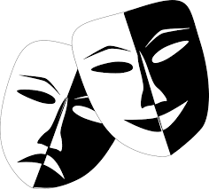
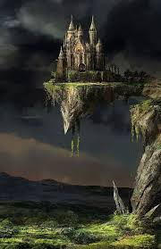

Un libro (del latín liber, libri) es una obra impresa, manuscrita o pintada en una serie de hojas de papel,
pergamino, vitela u otro material, unidas por un lado (es decir, encuadernadas) y protegidas con tapas, también llamadas cubiertas.
Un libro puede tratar sobre cualquier tema.

Comedia
El género dramático opuesto a la tragedia
y por tanto, relacionado casi siempre con historias con final feliz.
Ejemplos
Maldito karma
Me vestire de media noche
El proyecto esposa
El canguro alcoholico

Fantasia
El término fantasía puede referirse a un término psicológico que alude a una situación
imaginada o inventada.
Ejemplos
El Hobbit
Narnia
Fablehaven
Harry Potter
Romance
Romance, del latín romanice, es un concepto con varios usos vinculados
al ámbito de la lingüística y la literatura.
Ejemplos
Antes de tí
A primera vista
El deseo concedido
Luz de Luciernaga
Drama
drama a la obra de teatro o a la película que incluye una mayoría
de situaciones que son tensas y conflictivas.